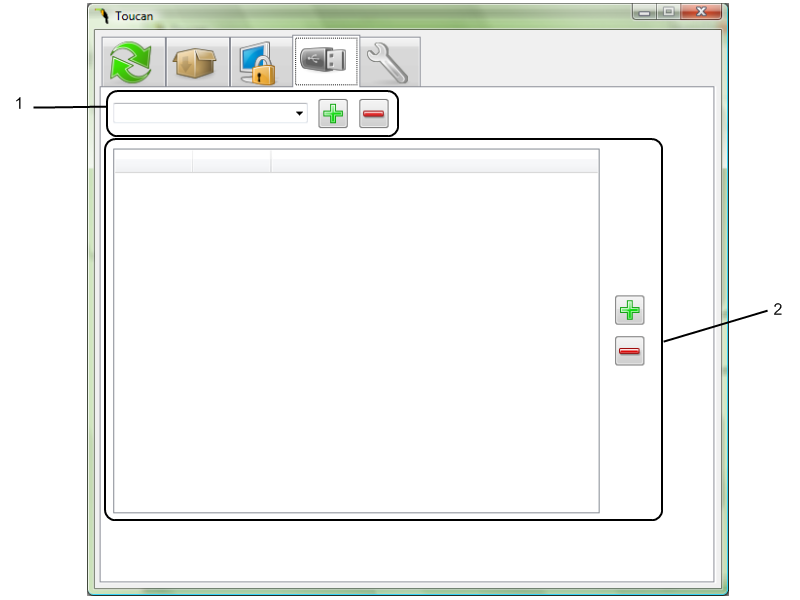

Toucan Help - Portable Variables
Brief Introduction
Portable Variables are an easy way to use one name
to point to
different places on different PC's. There are four built-in variables,
- drive,
which points to the drive that Toucan is installed on
- docs,
which points to your My Documents folder
- date, which returns the ISO formatted date
- time, which returns the time
To access these or any portable variable simply put in in the file path
box surrounded by @ signs. E.G. @drive@\Portable Apps\@date@-@time@.zip You can also access the system's built in environment variables by wrapping them in @ signs.

- The
drop down box shows all of the user generated portable
variables. The add and remove buttons allow you to add a new variables
and remove the selected variable.
- When a portable
variable is selected this box fills with where the variable points to.
If there is not a specific location that is pointed to then the Other
category is used. To edit a location just double click on it. The plus
button adds a new category and allows you to select where it points to.
The remove button removes the selected category.
Creating Your Own
Creating your own portable variables is very
easy. Say for example that the built in @docs@ variable doesn't point
to the correct path to your documents on a particular machine.
All you need to do it go to that particular and add a new
variable, lets call it
docs-fixed.
You will see that there are now two locations in the main box, all
you need to do is point the current computer's name to the correct
location of the documents by double clicking on it and adding the path.
Then for Other simply point it to @docs@ and voila, on the current
computer @docs-fixed@ will point to the correct path to your documents
and on all other machines it will use the built in path.